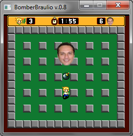
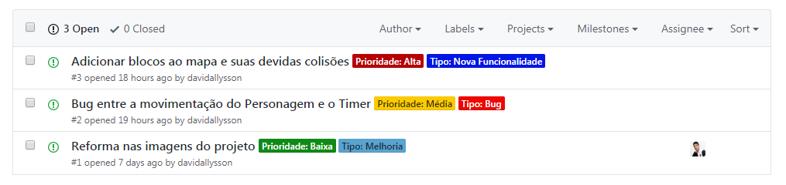

De uns três meses para cá iniciei uma "reforma geral" no meu perfil do Github e em todos os meus projetos. Na época que entrei na plataforma não tinha o conhecimento em Git e Github que tenho hoje, então era muito comum encontrar repositórios sem README no meu perfil, por exemplo.
Esse processo de reforma me fez refletir sobre alguns projetos que jaziam no meu esquecimento, contudo permaneciam dentro da minha lista de repositórios, parados há meses. Um desses projetos foi um pequeno protótipo de jogo chamado BomberBráulio: versão antiga do projeto.

O objetivo do jogo? Destruir o professor mais 'odiado' na minha faculdade.
Esta primeira versão contava com as trocas das telas, a colisão entre personagem-mapa, personagem-boss, boss-bomba, a movimentação do personagem, do boss e o timer do jogo. O projeto foi feito na linguagem Ruby com a biblioteca para desenvolvimento de jogos Gosu e apresentado para a minha primeira disciplina de programação da faculdade.
O maior problema era que, após a apresentação, o projeto ficou parado por meses e não recebeu nenhuma atualização ou modificação no código. Após refletir sobre o problema tive a ideia de organizar o repositório e torna-lo acessível para novos desenvolvedores. O repositório seria, então, uma maneira que jovens padawans encontrariam para aprender Ruby e também aprender a colaborar em projetos Github.
Eu sabia que o repositório poderia ajudar bastante aqueles que buscavam por um repositório para colaborar porque a curva de aprendizado em Ruby não era tão grande, então rapidamente seria possível contribuir com o repositório.
Transformando o repositório
Se quisesse que minha ideia funcionasse precisava deixar tudo o mais apresentável possível. Refatorei trechos de código, nomes de variáveis, abusei de comentários no código, dei uma caprichada inicial no README, adicionei uma seção com materiais de estudo, incluindo artigos, cursos e livros, organizei as issues, as labels, coloquei um template para issues e alterei a maioria das imagens para parecerem mais com um Bomberman e não com uma paródia do jogo. Para acessar o projeto basta clicar na imagem a seguir:

Tornando as issues do projeto Bomberman mais amigáveis.
Claro que eu desconhecia muitas informações a respeito de gerência de projetos no Github - como, por exemplo, a existência de templates para issues e pull requests. A ideia de transformar o projeto acabou me trazendo bastante conhecimento. Alguns artigos me ajudaram bastante na reforma do repositório, alguns deles são:
- > Melhorando issues para ficarem mais amigáveis para iniciantes
- > Profissionalizando seus projetos no Github
- > Simplificando o setup de projetos no Github
- > Gerenciando projetos com Github e ZenHub
Os próximo passos agora são: criar um Github Pages para o projeto e usa-lo como site de divulgação do projeto, criar um template para os pull requests, aumentar a quantidade de material de estudo dentro do README e receber o feedback da comunidade a respeito das mudanças para que a melhora possa ser contínua.
Aproveito a deixa para deixaro recado: por favor, você que está lendo esse post, se você acha que algo está ruim e/ou pode melhorar me manda uma mensagem. Pode ser via facebook, twitter, telegram, whatsapp ou até mesmo através da página de contato aqui do blog. Sua colaboração é muito importante!
Colaborar em outros projetos
Uma das coisas mais legais que descobri esse ano, graças ao meu Mentor do Training Center, é a existência de um evento que incentiva as contribuições em projetos open-source. Todos os meses de outubro, a Digital Ocean, que é uma empresa de infraestrutura para computação em nuvem, realiza, juntamente com o GitHub, a Hacktoberfest.
A Hacktoberfest é um evento que dura o mês inteiro e busca incentivar a participação em projetos, então saber um pouco de programação para participar é interessante, mas não se acanhe caso esteja iniciando, tem espaço para todos os níveis de conhecimento. E a melhor parte: qualquer pessoa que queira pode participar da sua própria casa!

O objetivo do evento é que todos os participantes abram quatro pull requests em qualquer repositório público no GitHub, independente se esse projeto tem ou não issues marcadas com a label do evento. E não precisa ter seu pull request aceito para ele ser contabilizado — alguns pull requests podem demorar bastante para serem revisados e aceitos. Para participar basta ter uma conta no Github e se cadastrar no evento, para que suas contribuições sejam contabilizadas.
Cada um dos quatro pull requests precisam ser feitos durante o período do evento. A edição de 2017 já passou, mas por que não se organizar para participar da edição de 2018 e colaborar em projetos que utilizam tecnologias do seu interesse? Além de dar os primeiros passos no mundo da colaboração em projetos Github e aprender com o feedback você ainda ganha uma camiseta linda! Não tem como sair perdendo.
Agora você pode estar se perguntando: "não gosto de Ruby e não gostaria de colaborar em um game, queria um projeto diferente, como encontrar algum repositório legal que eu possa colaborar?". É aí que eu vos apresento a divertidalista: um repositório github que organiza e recomenda para você projetos ideais para começar a colaborar. Melhor do que isso não dá, né?
Por que colaborar?
Se os argumentos de aprender novas coisas, melhorar seus conhecimentos, aumentar seu networking e ganhar uma camiseta não forem o suficiente para te motivar a começar a colaborar então apresento um argumento ainda mais forte: muitas empresas avaliam os candidatos que buscam uma vaga de trabalho através de seus perfis no github. Colaborar em projetos deixa o seu perfil do github muito mais atrativo e interessante, e, dependendo do projeto, pode ser algo que traga oportunidades únicas para a sua carreira.
Vou dar um exemplo para mostrar como isso funciona na prática. Vamos supor que dois programadores seniores estão concorrendo a uma vaga de trabalho muito boa e que uma das skills mais exigidas pela a empresa seja experiência com Laravel (Framework PHP). Imagine agora que um deles colaborou no projeto da framework no github. Quais dos dois você acha que será contratado? Pois é.
Técnico em Informática e Graduando em Análise e Desenvolvimento de Sistemas, ambos pelo IFRN, David, além de programador, é músico. Toca violão, piano, flauta e escaleta. Adora acampar, viajar, ler e estuda psicologia como hobbie nas horas vagas.
Clique aqui para saber mais sobre mim.